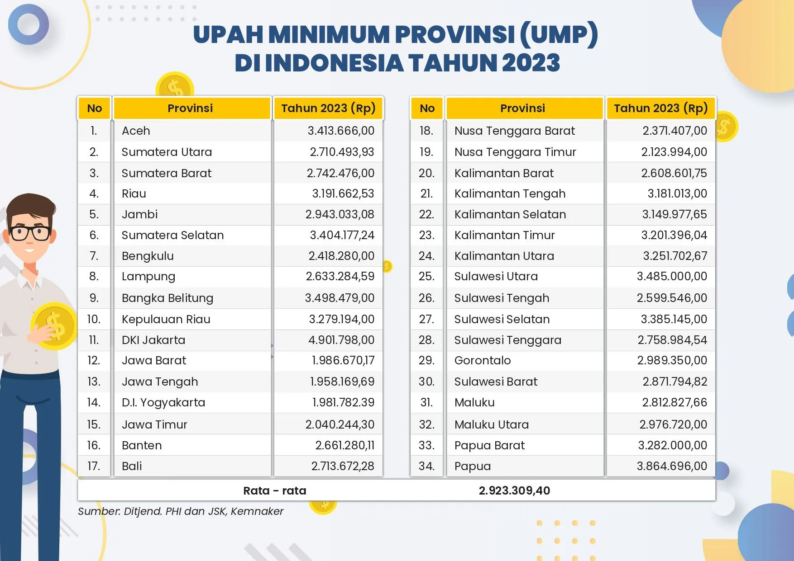
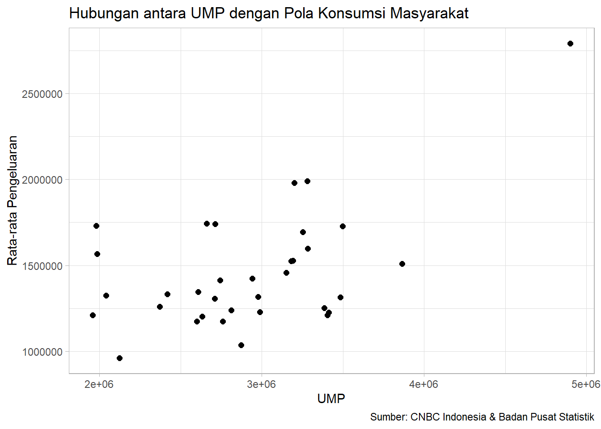

library("readxl")
library("ggplot2")Pengaruh Tingkat UMP terhadap Pola Konsumsi Masyarakat di Indonesia pada Tahun 2023
Metode Penelitian Politeknik APP Jakarta

1 Pendahuluan
1.1 Latar belakang
Upah Minimum Provinsi (UMP) merupakan kebijakan ekonomi yang berpontensi dapat mempengaruhi pola konsumsi masyarakat secara langsung. UMP tidak hanya menjadi indikator bagi tingkat upan, tetapi juga berperan dalam membentuk daya beli masyarakat. Sejalan dengan itu, pemahaman mendalam mengenai pengaruh kenaikan UMP terhadap pola konsumsi dapat memberikan wawasan lebih dalam untuk merancang kebijakan ekonomi yang berpihak pada masyarakat dan berdampak positif terhadap pertumbuhan ekonomi.

1.2 Ruang lingkup
Penelitian ini akan berfokus pada analisis pengaruh kenaikan UMP terhadap pola konsumsi masyarakat. Penelitian ini mencakup pengumpulan data dari sumber terpercaya terkait pendidikan dan tingkat pengangguran untuk menghasilkan temuan yang akurat dan relevan.
1.3 Rumusan masalah
Bagaimana besaran UMP dapat mempengaruhi pola konsumsi masyarakat?
Apakah terdapat pengaruh yang signifikan antara kenaikan UMP dengan pola konsumsi masyarakat?
1.4 Tujuan dan manfaat penelitian
Tujuan dari penelitian ini adalah untuk memahami secara lebih dalam pengaruh kebijakan upah terhadap kebiasaan belanja dan konsumsi masyarakat.
Dengan mengidentifikasi perubahan dalam pola konsumsi setelah terjadinya kenaikan ataupun penurunan UMP, diharapkan dapat memberikan pandangan yang kritis mengenai bagaimana perubahan UMP dapat mempengaruhi keberlanjutan konsumsi masyarakat.
Selain itu, diharapkan penelitian ini dapat berkontribusi bagi perumusan kebijakan ekonomi yang lebih tepat sasaran, serta memberikan pedoman bagi para pelaku bisnis dalam menyesuaikan strategi mereka.
1.5 Package
Package yang digunakan dalam penelitian ini adalah:
2 Studi Pustaka
Upah Minimum ditetapkan oleh pemerintah dengan memperhitungan Kehidupan Hidup Layak, sehingga apabila upah berada dibawah tingkat UMK maka dapat dikatakan bahwa seorang pekerja menerima upah yang tidak layak untuk memenuhi kebutuhannya (Miswar, 2018).
Semakin tinggi tingkat upah minimum maka dapat dinilai terjadi kesejahteraan tenaga kerja tersebut adalah tinggi. Sasaran dari program upah minimum ialah agar bisa memenuhi kebutuhan minimum pekerja dan keluarganya (Chasya, 2013).
Upah minimum berpengaruh terhadap pendapatan sehingga berpengaruh pula terhadap tingkat konsumsi masyarakat. Upah minimum dinilai sebagai patokan utama pendapatan yang dimiliki tenaga kerja. Semakin tinggi upah minimum masyarakat maka konsumsi masyarakat akan barang dan jasa akan semakin tinggi.
3 Metode penelitian
3.1 Data
Data yang telah dikumpulkan bersumber langsung dari CNBC Indonesia untuk daftar UMP dan Badan Pusat Statistik Indonesia untuk Rata-Rata Pengeluaran.
| Provinsi | UMP | Pengeluaran |
|---|---|---|
| Aceh | 3413666 | 1225976.196 |
| Sumatera Utara | 2710493 | 1305339.354 |
| Sumatera Barat | 2742476 | 1411823.462 |
| Riau | 3191662 | 1527549.355 |
| Jambi | 2943000 | 1424125.4 |
| Sumatera Selatan | 3404177 | 1209985.965 |
| Bengkulu | 2418280 | 1332558.38 |
| Lampung | 2633284 | 1203017.306 |
| Kep. Bangka Belitung | 3498479 | 1727549.805 |
| Kep. Riau | 3279194 | 1989702.534 |
| DKI Jakarta | 4900798 | 2791715.754 |
| Jawa Barat | 1986670 | 1567666.154 |
| Jawa Tengah | 1958670 | 1209906.178 |
| DI Yogyakarta | 1981169 | 1731559.933 |
| Jawa Timur | 2040244 | 1323486.256 |
| Banten | 2661280 | 1743686.861 |
| Bali | 2713672 | 1741522.782 |
| NTB | 2371407 | 1260820.067 |
| NTT | 2123994 | 961372.2258 |
| Kalimantan Barat | 2608601 | 1345552.262 |
| Kalimantan Tengah | 3181013 | 1525785.005 |
| Kalimantan Selatan | 3149977 | 1457344.319 |
| Kalimantan Timur | 3201396 | 1980274.864 |
| Kalimantan Utara | 3251702 | 1693576.9 |
| Sulawesi Utara | 3485000 | 1315176.486 |
| Sulawesi Tengah | 2599546 | 1173679.465 |
| Sulawesi Selatan | 3385145 | 1252551.242 |
| Sulawesi Tenggara | 2758984 | 1172739.179 |
| Gorontalo | 2989350 | 1228893.402 |
| Sulawesi Barat | 2871784 | 1036520.079 |
| Maluku | 2812827 | 1238170.28 |
| Maluku Utara | 2976720 | 1317159.419 |
| Papua Barat | 3282000 | 1598253.623 |
| Papua | 3864696 | 1509992.401 |
3.2 Metode analisis
Hal pertama yang dilakukan dalam analisis ini adalah mengumpulkan data berupa UMP pada tahun 2023 dan rata-rata pengeluaran masyarakat pada tahun 2023. Selanjutnya dilakukan metode analisis regresi untuk mengukur dan menggambarkan hubungan antara UMP dengan pola konsumsi masyarakat. Spesifikasi yang dilakukan adalah:
\[ y_{t}=\beta_0 + \beta_1 x_t+\mu_t \] di mana \(y_t\) adalah UMP dan \(x_t\) adalah Pengeluaran.
4 Pembahasan
4.1 Pembahasan masalah
Berikut ini adalah gambaran dari hubungan UMP dengan pola konsumsi masyarakat.
library("readxl")
dat<-read_excel("data untuk uas.xlsx")
head(dat)# A tibble: 6 × 2
UMP Pengeluaran
<dbl> <dbl>
1 3413666 1225976.
2 2710493 1305339.
3 2742476 1411823.
4 3191662 1527549.
5 2943000 1424125.
6 3404177 1209986.library("ggplot2")
ggplot(data=dat,aes(x=UMP,y=Pengeluaran)) +
geom_point(color="black",size=2) +
labs(title="Hubungan antara UMP dengan Pola Konsumsi Masyarakat",
x="UMP",
y="Rata-rata Pengeluaran",
caption = "Sumber: CNBC Indonesia & Badan Pusat Statistik") +
theme_light()
4.2 Analisis masalah
Berikut ini adalah hasil regresi datanya.
reg<-lm(Pengeluaran~UMP,data=dat)
summary(reg)
Call:
lm(formula = Pengeluaran ~ UMP, data = dat)
Residuals:
Min 1Q Median 3Q Max
-404568 -221462 -20571 125263 727059
Coefficients:
Estimate Std. Error t value Pr(>|t|)
(Intercept) 5.585e+05 2.522e+05 2.214 0.034064 *
UMP 3.073e-01 8.457e-02 3.634 0.000967 ***
---
Signif. codes: 0 '***' 0.001 '**' 0.01 '*' 0.05 '.' 0.1 ' ' 1
Residual standard error: 292500 on 32 degrees of freedom
Multiple R-squared: 0.2921, Adjusted R-squared: 0.27
F-statistic: 13.21 on 1 and 32 DF, p-value: 0.0009668Hasil regresi menunjukkan bahwa terdapat hubungan positif antara UMP dan tingkat pengeluaran masyarakat. Koefisien regresi positif (0.3073) menandakan bahwa setiap kenaikan satu unit dalam UMP terkait dengan peningkatan sebesar 0.3073 unit dalam pengeluaran masyarakat. Hasil signifikan ini didukung oleh p-value yang rendah (0.000967).
5 Kesimpulan
Berdasarkan hasil regresi, dapat disimpulkan bahwa UMP dengan pola konsumsi memiliki pengaruh yang signifikan. Masyarakat yang mempunyai tingkat pendapatan yang rendah tentu dengan sendirinya mempunyai pengeluaran konsumsi yang lebih rendah demikian pula sebaliknya yaitu bila pendapatan masyarakat besar maka peluang tingkat konsumsinya akan besar. Hal ini menunjukkan bahwa UMP merupakan variabel penting dalam menentukan besar atau kecilnya konsumsi masyarakat.
6 Referensi
Rata‑Rata Pengeluaran per Kapita Sebulan Untuk Makanan dan Bukan Makanan di Daerah Perkotaan dan Perdesaan Menurut Provinsi (rupiah), 2011-2023—Tabel
Statistik—Badan Pusat Statistik Indonesia. (t.t.). Diambil 25 Januari 2024, dari https://www.bps.go.id/id/statistics-table/1/OTQ1IzE=/rata-rata-pengeluaran-per-kapita-sebulan-untuk-makanan-dan-bukan-makanan-di-daerah-perkotaan-dan-perdesaan-menurut-provinsi-rupiah-2011-2023.html
Redaksi, T. (t.t.). Lengkap! Ini Dia Daftar UMP Terbaru 2023 di 34 Provinsi RI - Halaman 2. CNBC Indonesia. Diambil 25 Januari 2024, dari https://www.cnbcindonesia.com/news/20230102121501-4-402053/lengkap-ini-dia-daftar-ump-terbaru-2023-di-34-provinsi-ri